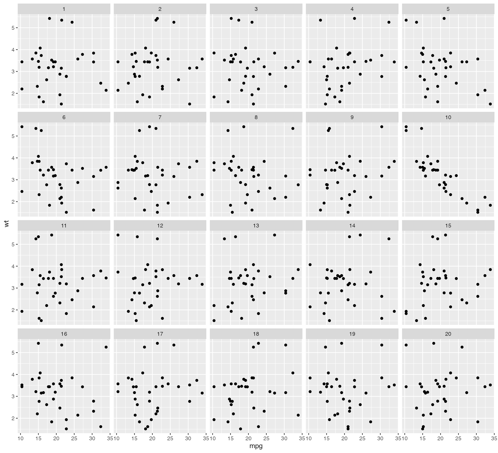
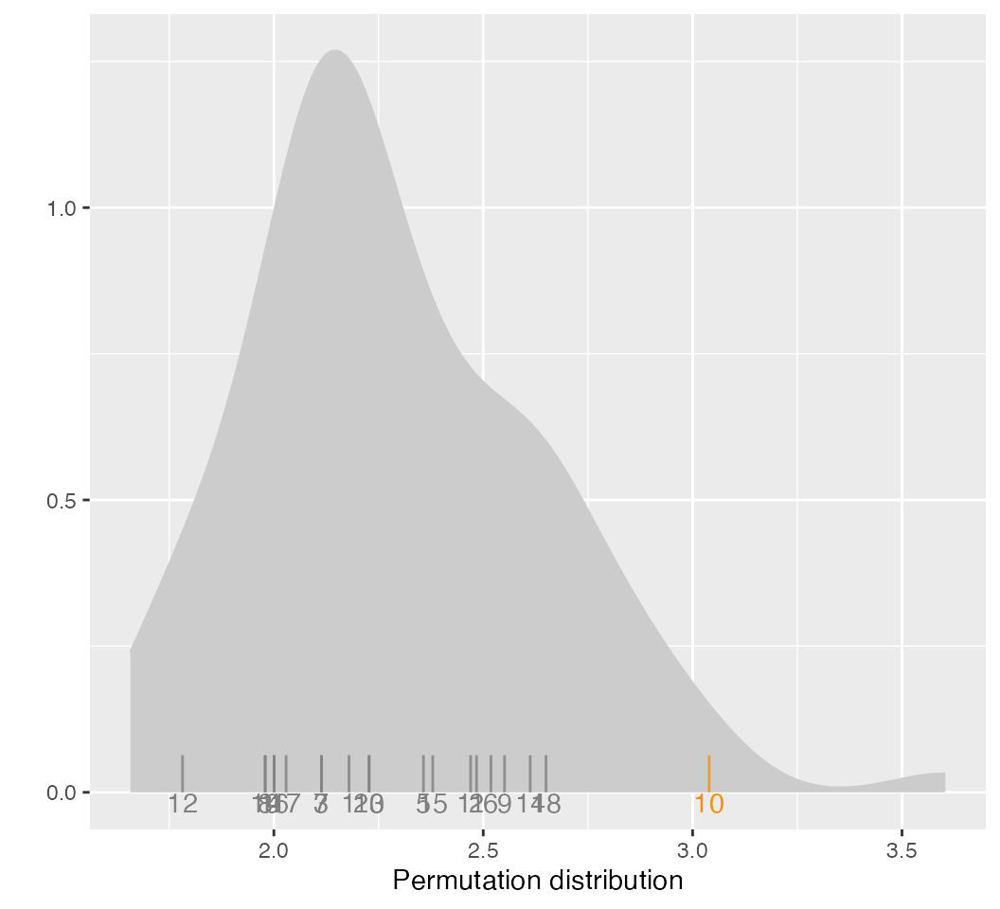

Examining distances between null and true data plots
Introduction
Numerically describing the content of data plots is very difficult. These functions are an attempt to measure in the special situation of a lineup, how the true data plot differs or not from the null plots.
Metrics are calculated in association with lineups to help understand what people see in the data plots, and assess the quality of a lineup, because the null plots represent a finite sample from a null distribution, and this finiteness may affect how observers read the lineups.
The distance metrics included in the nullabor package cover some of the types of plots used in the first 10 Turk studies: scatterplots, side-by-side boxplots, regression lines overlaid on scatterplots, and colored scatterplots. A generic approach based on binning the plot space and calculating data density should (roughly) work universally for 2D displays.
When a null-generating method is given the functions can simulate more draws from the null to provide an empirical distribution of the distance values for the null plots. This would be used to guage how far the data plot is to the null plots relative to how far null plots are from each other. This might be used to assess whether the data plot in lineup shuld be detected or not by a human observer.
The functions reg_dist, bin_dist,
uni_dist, box_dist, sep_dist are
ways of calculating how different one plot is from another. These are
used to get a sense if the actual data plot is different from the null
plots, in as far as we can determine numerically. The functions
distmet and distplot compute a rough estimate
of the distribution of the distance measures for the data and the null
generating mechanism, and make a plot where the values for the actual
data plot and the null plots in a lineup are shown. This helps a little
to evaluate whether we would expect people to easily pick the data plot
from the lineup and thus help to organize the setting up and analysing
the results from Amazon Turk experiments http://mamajumder.github.io/html/experiments.html
some.
Distance metrics
There are five different distance metrics in
nullabor package, named bin_dist,
box_dist, reg_dist, sep_dist and
uni_dist. The different distance metrics are constructed so
that they can identify the different properties of the data.
uni_dist works for univariate data while the others works
for all types of bivariate data. Binned distance is a generic distance
which can be used in any situations while the other distance metrics are
constructed so that they can identify the effect of graphical elements
in a plot like an overlaid regression line or presence of defined
clusters. To calculate some of the metrics, additional informations like
a class variable or the number of bins should be provided.
Distance for univariate data
uni_dist is a distance metric which calculates the
euclidean distance between the first four central moments of two
univariate data. A typical usage would be when one needs to calculate
the distance between the two histograms drawn from two datasets.
## [1] 2.292034Distance based on regression parameters
reg_dist is a distance metric which calculates the
euclidean distance between the regression parameters of a model fitted
to one plot and that of another plot. It is advisable to use this
distance in situations where a regression line is overlaid on a
scatterplot.
with(mtcars, reg_dist(data.frame(wt, mpg), data.frame(sample(wt), mpg)))## [1] 0.9895621Distance based on boxplots
box_dist is a distance metric which works for
side-by-side boxplots with two levels. The first quartile, median and
the third quartile are calculated for each box and the absolute
distances of these are calculated for the two boxes.
box_dist calculates the euclidean distance between these
absolute distances for the two plots. The boxplot distance should be
used in situations where a side-by-side boxplot is used to compare the
distribution of a variable at two different levels.
with(mtcars, box_dist(data.frame(as.factor(am), mpg), data.frame(as.factor(sample(am)), mpg)))## [1] 5.828593Distance based on separation
sep_dist is a distance metric based on the separation
between clusters. The separation between clusters is defined by the
minimum distances of a point in the cluster to a point in another
cluster. The separation between the clusters for a given dataset is
calculated. An euclidean distance is calculated between the separation
for the given dataset and another dataset. The number of clusters in the
dataset should be provided. If not, the hierarchical clustering method
is used to obtain the clusters.
with(mtcars, sep_dist(data.frame(wt, mpg, as.numeric(as.factor(mtcars$cyl))), data.frame(sample(wt), mpg, as.numeric(as.factor(mtcars$cyl))), nclust = 3))## [1] 0.09188574Binned Distance
bin_dist is a generic distance which works for any
situation for any dataset. For a given bivariate dataset, X and Y
variables are divided into p and q bins respectively to obtain pq cells.
The number of points falling in each cell are counted for a given
dataset. bin_dist between two datasets calculates the
euclidean distance between the cell counts of these two data. The values
of p and q should be provided as arguments.
with(mtcars, bin_dist(data.frame(wt, mpg), data.frame(sample(wt), mpg), lineup.dat = NULL, X.bin = 5, Y.bin = 5))## [1] 8.246211Calculating the mean distances for the plots in the lineup
It is interesting to see whether the true plot in a lineup is
different from all the null plots. To find this the distances between
the true plot and all the null plots are calculated and the mean of
these distances is calculated. Similarly, for each null plot, the
distance between the null plot and all the other null plots is
calculated and averaged to obtain the mean distance for each null plot.
calc_mean_dist calculates the mean distance corresponding
to each plot in the lineup. If the mean distance of the true plot is
larger than the mean distances of all the null plots, the lineup is
considered easy. If one of the null plots has a larger mean distance
than the true plot, the lineup is considered difficult.
calc_mean_dist(lineup(null_permute('mpg'), mtcars, pos = 10), var = c('mpg', 'wt'), met = 'reg_dist', pos = 10)## # A tibble: 20 × 2
## plotno mean.dist
## <int> <dbl>
## 1 1 0.0232
## 2 2 0.0398
## 3 3 0.0399
## 4 4 0.0974
## 5 5 0.0210
## 6 6 0.0206
## 7 7 0.0429
## 8 8 0.0219
## 9 9 0.0625
## 10 10 0.876
## 11 11 0.0233
## 12 12 0.0512
## 13 13 0.0518
## 14 14 0.0341
## 15 15 0.0574
## 16 16 0.0258
## 17 17 0.0333
## 18 18 0.0539
## 19 19 0.0506
## 20 20 0.0325Calculating difference measure for lineups
The mean distances for each plot in the lineup are obtained using
calc_mean_dist.calc_diff calculates the
difference between the mean distance for the true plot and the maximum
mean distance for the null plots.
calc_diff(lineup(null_permute('mpg'), mtcars, pos = 10), var = c('mpg', 'wt'), met = 'reg_dist', dist.arg = NULL, pos = 10)## [1] 0.6143594Optimum number of bins
Binned distance is highly affected by the choice of the number of
bins. The number of bins is provided by the user and this can be
subjective. This motivates to design a way to select the optimum number
of bins to be used. opt_diff finds the optimal number of
bins in both x and y direction which should be used to calculate the
binned distance. The binned distance is calculated for each combination
of provided choices of number of bins in x and y direction and finds the
difference using calc_diff for each combination. The
combination for which the difference is maximum should be used.
opt.diff <- opt_bin_diff(lineup(null_permute('mpg'), mtcars, pos = 10), var = c('mpg', 'wt'), 2, 4, 2, 4, pos = 10, plot = TRUE)
opt.diff$p
Distribution of distance metrics
Measuring the quality of a lineup is interesting. But it may also be
important to compare a few lineups. The distmet function
provides the empirical distribution of the distance metrics based on the
mean distance of the true plot and the mean distance from the null
plots. The lineup data, the null generating mechanism and the choice of
the distance metric has to be provided. Users have the flexibility of
using their distance metrics. The position of the true plot in the
lineup has to be provided as well. If the distance metrics require
additional arguments, those have to be provided as well.
lineup.dat <- lineup(null_permute('mpg'), mtcars, pos = 10)
qplot(mpg, wt, data = lineup.dat, geom = 'point') + facet_wrap(~ .sample)## Warning: `qplot()` was deprecated in ggplot2 3.4.0.
## This warning is displayed once every 8 hours.
## Call `lifecycle::last_lifecycle_warnings()` to see where this warning was
## generated.
Copy and paste the output of lineup.dat to get the position of the true plot
#decrypt('...')
#[1] 'True data in position 10' # Use pos = 10
dist.vals <- distmet(lineup.dat, var = c('mpg', 'wt'),'reg_dist', null_permute('mpg'), pos = 10, repl = 100, dist.arg = NULL)
head(dist.vals$lineup)## # A tibble: 6 × 2
## plotno mean.dist
## <int> <dbl>
## 1 1 0.0319
## 2 2 0.0376
## 3 3 0.0387
## 4 4 0.0979
## 5 5 0.209
## 6 6 0.156
dist.vals$diff## [1] 0.5947055
head(dist.vals$closest)## [1] 5 6 4 18 13
head(dist.vals$null_values)## [1] 0.12527373 0.07760364 0.04518376 0.04094711 0.06989432 0.09567388
dist.vals$pos## [1] 10
dist.vals <- distmet(lineup.dat, var = c('mpg', 'wt'),'bin_dist', null_permute('mpg'), pos = 10, repl = 100, dist.arg = list(lineup.dat = lineup.dat, X.bin = 5, Y.bin = 5)) Plotting the empirical distribution of the distance metric
distplot functions plots the empirical distribution of
the distance metric, given the output of distmet function.
The distribution is shown in grey along the distance for the true plot
in orange and the distances for the null plots in black.
distplot(dist.vals)